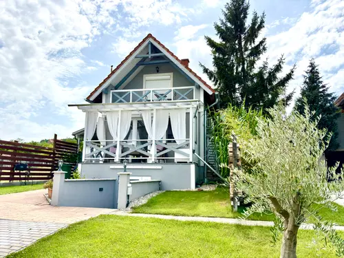

#110dandelion-d1-source-001.webpd1-001
betöltés…ismeretlen
SEO draft
approved: false
altHu: Dandelion D1 szürke ház fehér kerítéssel és zöld kerttel
titleHu: Dandelion D1 szürke ház kerttel
captionHu: A kep a szallas egyik reszletet mutatja.
altEn: Dandelion D1 gray house with white fence and green garden
titleEn: Dandelion D1 gray house with garden
captionEn: The Dandelion D1 has a relaxing area and plants in the garden.